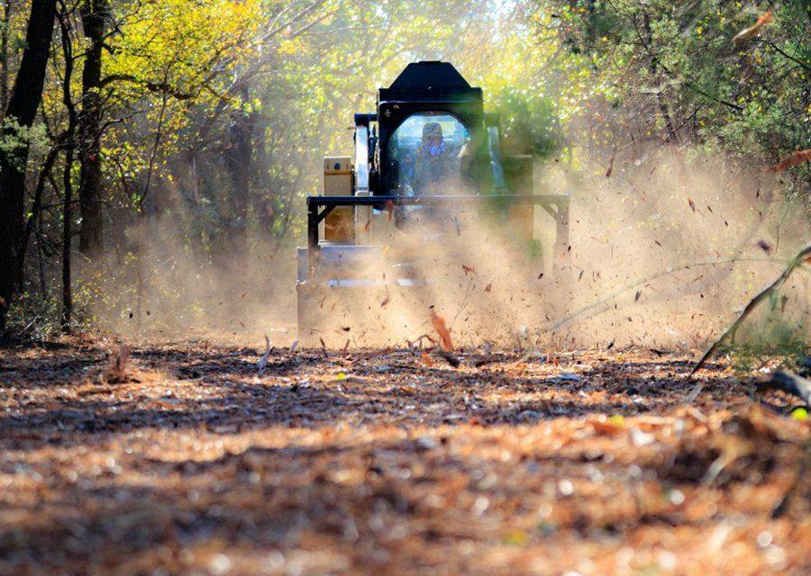
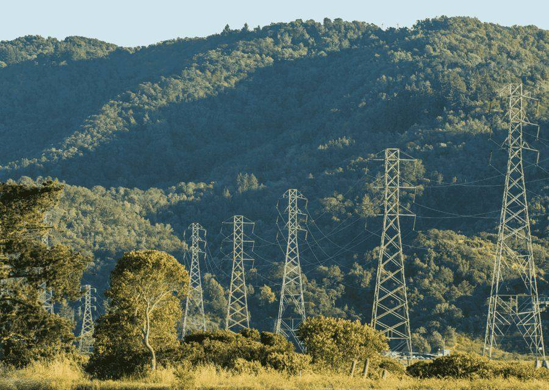

Utilities & Energy
Serving Spring Branch, Bulverde, New Braunfels, Canyon Lake, Boerne, San Antonio, San Marcos, the Texas Hill Country, and clients across Central Texas.
Our right-of-way clearing services support utility companies, service providers, and field contractors who need dependable, large-scale clearing for linear infrastructure — work that demands accuracy, coordination, and the ability to work efficiently across long distances and multiple property ownerships.
A common example is high-pressure gas pipeline installation. We use forestry mulching equipment to open wide corridors — often 90 feet or more — across routes that can extend for hundreds of miles. We typically serve as the first contractor on site, opening the easement before grading crews, dozers, and excavators move in to trench and install.
Using professional-grade survey equipment, we load files from the client's licensed surveyor and follow the designated easement precisely — clearing accurately and without deviation, minimizing disturbance outside the easement. Because corridors cross multiple properties, we coordinate with landowners professionally from start to finish.
Once an easement is established, vegetation regrows. We maintain corridors by controlling brush and tree growth so the right-of-way stays accessible, operable, and compliant — for gas pipelines, powerline corridors, waterlines, and other utility infrastructure.

In the Field

FAQs
The pace depends on tree density, terrain, and the equipment used. With reasonable coverage, our smaller machines clear ½ to 1 acre per day; our larger, high-horsepower machines clear 1 to 3 acres per day. Heavier density or difficult terrain may reduce the pace.
It depends on how much mulch is left on the ground. In lighter applications, grass can begin growing back within days, especially after rain. In heavier applications — up to 12 inches of mulch — it may take 2 to 3 years for grass to return in significant density. Both outcomes are normal.
We pride ourselves on a clean, finished appearance. Our preference is a fine finish — small material often described as “toothpicks” or “hamster chips.” It's more visually appealing, easier to drive over, and lets grass regrow faster than large chunks or uneven debris.
No. There is no size limitation on the trees we can mulch — larger trees simply take more time. A tree that takes an hour with a smaller machine can often be processed in as little as 15 minutes with our larger, high-horsepower equipment.
In Texas — especially Central Texas — trees are often stressed by drought. Oak wilt is also a major concern and typically spreads in defined paths, affecting susceptible species quickly. Once a tree is infected we can't restore its health; selective clearing is often the best option to protect surrounding trees.
Pricing depends on the scope and your preference. We can price hourly, daily, by the acre, or as a lump-sum bid. Every estimate is based on how many hours an area will take, factoring tree density, size and species, topography, access, maneuverability, and soil conditions.
With forestry mulching, trees are mulched where they stand and root balls are intentionally left in place to maintain soil stability. When full removal is required — such as under future foundations — we remove root balls with dozers or excavators and mulch them on site, which is our preferred method.
Yes. We have extensive experience mulching large brush piles, including piles created by bulldozers years earlier — some as large as a house. Instead of burning, which is often prohibited during burn bans, we grind the entire pile into mulch safely and efficiently.
As lifelong Texans, we have a deep appreciation for the natural landscape and native trees. We believe in responsible land stewardship — when we work a property, we treat it as if it were our own, and we don't consider a job finished unless we're proud of the result. With proper maintenance, our work is designed to leave a legacy.
It does not get better.
Tell us about your property and your goal. We'll walk the land and tell you the cost before we start.
Request an Estimate